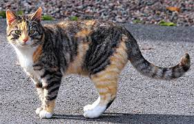

Katter
Kattens ursprung
I en ny studie kan vi se att dagens tamkatter kom från Egypten och Mellanöstern. Dom har antagligen spridit sig genom handelsvägar och liknande, till både land och sjöss. Denna spridning påbörjades för 5000 till 10000 år sedan. Det tycks som att katterna levde parallellt med människan under tusentals år, innan de faktiskt blev domesticerade. De första katterna avlades troligtvis för att kontrollera skadedjur som möss och råttor, snarare än sällskapsdjur. Åren gick och katterna blev mer bekväma med människor och människor blev mer förtjusta i dessa små varelser.
Idag är katten det populäraste och vanligaste husdjuret i världen. I dagens Sverige och Europa så finns det fler katter än hundar.
Kattraser
Skeppskatt

Ragdoll

Bondkatt